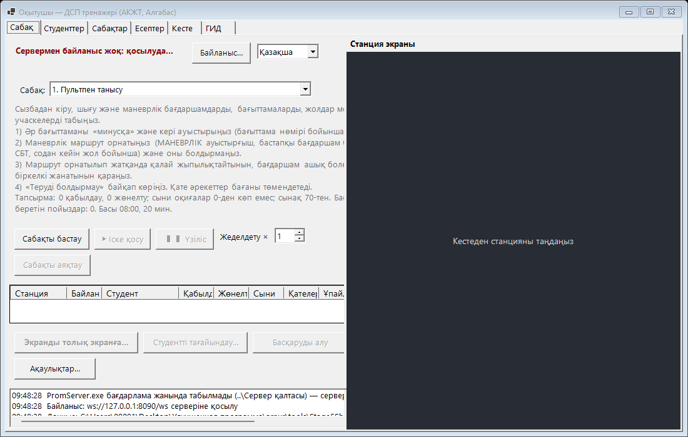
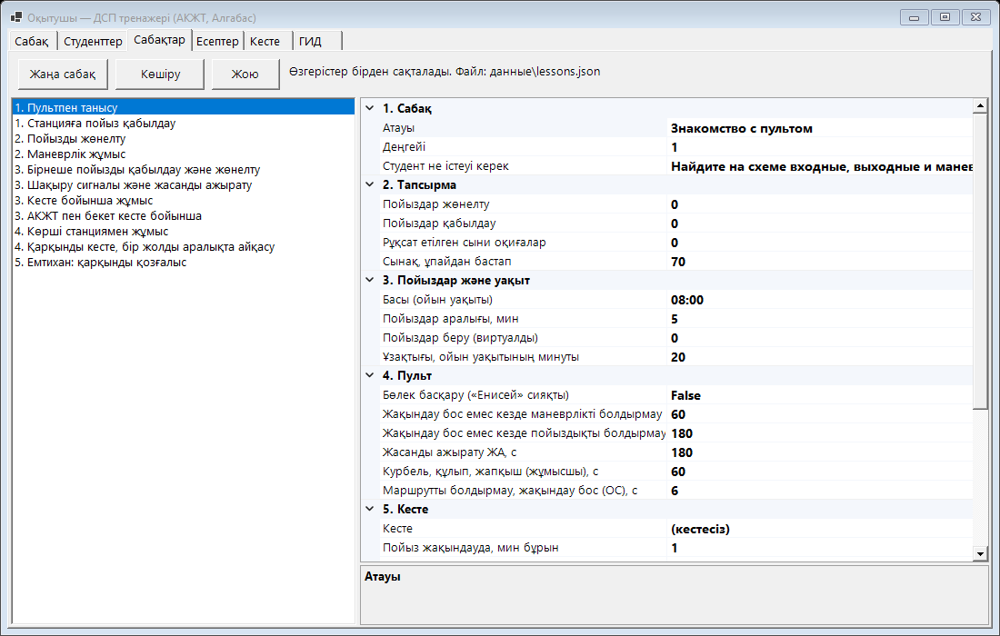
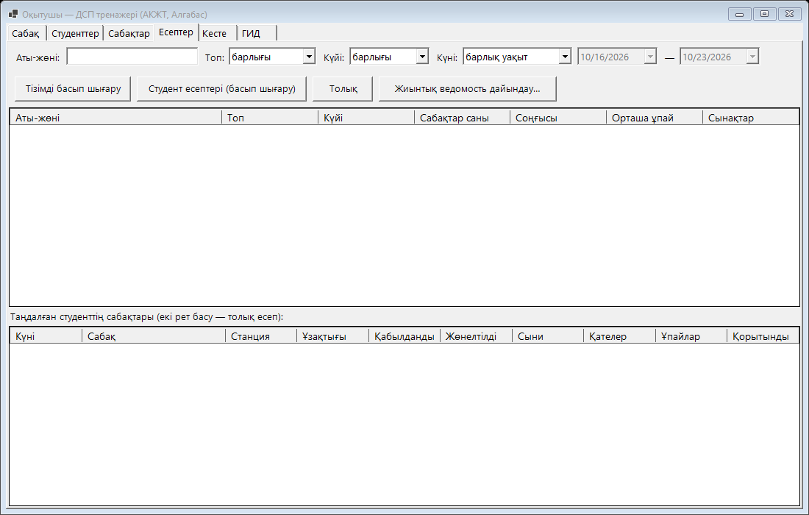

Оқытушыға арналған нұсқаулық
Сыныпты қалай дайындау, іскерлік ойын өткізу, ақаулықтар беру және нәтижелерді қарау.
1. Жиынтықта не бар
| Бума | Бұл не |
|---|---|
Преподаватель\Teacher.exe | Оқытушы бағдарламасы. Байланыс серверін өзі іске қосады. Деректер (студенттер, сабақтар, нәтижелер) — Преподаватель\данные бумасында. |
АКЖТ\Station.exe | АКЖТ станциясы мен жол бекетінің пульті (екі мониторға бір терезе). Arduino бумасы — макет микробағдарламалары. |
Алгабас\Algabas.exe | Алгабас станциясының пульті. датчики.txt — макеттің қай датчигі қай учаскеге жатады. Arduino бумасы — скетч. |
Сервер\PromServer.exe | Байланыс сервері (8090 порты). Қолмен іске қосудың қажеті жоқ. |
Инструкции | Осы нұсқаулықтар (студент, оқытушы, бағдарламашы) үш тілде. |
Орнату қажет емес: бәрі exe ішінде. готовая_программа бумасын толығымен флешкамен тасуға болады. Windows 10 / 11, компьютерлер бір желіде.
2. Сыныпты дайындау
- Оқытушы компьютерінде
Преподаватель\Teacher.exeіске қосыңыз. Windows PromServer үшін брандмауэр туралы сұрайды — жеке желілерде рұқсат етіңіз. Төменгі журналда станцияларға арналған мекенжай пайда болады (мысалы192.168.8.27). - Студент компьютерлерінде АКЖТ немесе Алгабас іске қосыңыз → Байланыс… → оқытушы мекенжайы → Қосу. Мекенжай есте сақталады.
- Станция «Сабақ» қойындысындағы кестеде пайда болады. АКЖТ мен Алгабас бір-бірімен байланысты — пойыздар станциялар арасында өздері ауысады.
- Макетпен жұмыс істесеңіз — станция терезесінің жоғарғы жағындағы тізімнен Arduino портын таңдаңыз (11-бөлім).

3. Студенттер
«Студенттер» қойындысы: Қосу… (аты-жөні, тобы, құпиясөз — бос болуы мүмкін), Өзгерту…, Құпиясөз…, Жою. Студент станцияда «Кіру» түймесімен кіріп, өзін таңдайды. Тіркелуге рұқсат болса, студент өзін өзі қоса алады («Мен тізімде жоқпын…»).
4. Сабақтар
«Сабақтар» қойындысы: сол жақта сабақтар тізімі, оң жақта қасиеттері. Жаңа сабақ, Көшіру, Жою. Өзгерістер бірден сақталады.

| Бөлім | Қасиеттер |
|---|---|
| 1. Сабақ | Атауы, деңгейі (1 — бастаушылар … 5 — емтихан), студент не істеуі керек (студентте «Тапсырма» түймесімен көрінеді). |
| 2. Тапсырма | Қабылдау / жөнелту керек пойыздар, рұқсат етілген сыни оқиғалар, сынақ … балдан. |
| 3. Пойыздар және уақыт | Қанша виртуалды пойыз және қандай аралықпен беру, ұзақтығы (ойын минуттары), басталуы (ойын уақыты). |
| 4. Пульт | Маршрутты болдырмау ұстамдары (ОС, ОП, ОМ), жасанды ажырату, монтер жұмысы; бөлек басқару. |
| 5. Кесте | Сабақ кестесі («Кесте» қойындысы), пойыз жақындауда неше минут бұрын пайда болады, пойыздар жылдамдығы (учаскеге с; кесте үшін — 12). |
| 6. Маневрлер және ПНП | Жоспар: ПНП-ға вагон беру / жинау, жергілікті вагондарды жөнелту; жүк пойызындағы жергілікті вагондар; вагонға тиеу минуттары; қалпына келтіру пойызының келуі мен жұмысы. |
Дайын сабақтар — «Пультпен танысудан» «Емтиханға» дейін; кесте бойынша сабақтар, «Журналдар, бланкілер, радиобайланыс», «Маневрлік жұмыс және ПНП», «Рельстен шығу және қалпына келтіру пойызы» бар.
5. Сабақ өткізу
- «Сабақ» қойындысы: сабақты таңдаңыз → Сабақты бастау. Станциялар сабақты алады, пульттер тасталады, санауыштар нөлденеді.
- Студенттер кіреді («Кіру»). Студентті станцияға қолмен отырғызу — Студентті тағайындау….
- ▶ Іске қосу — ойын уақыты жүреді; ❚❚ Үзіліс — тұрады (пульттер командаларды қабылдамайды); «Жеделдету ×1…×10» — барлық станциялар үшін.
- Станциялар кестесінде: студент, қабылданды / жөнелтілді, сыни оқиғалар, қателер, балл — өздігінен жаңарады.
- Сабақты аяқтау — станциялар нәтижелерін жібереді, олар «Есептер» қойындысында сақталады.
6. Студент экраны және басқару
- Кестедегі станцияны басыңыз — оның экраны оң жақта.
- Үлкен: станцияны екі рет басу немесе Экранды толық экранға… — толық экранды бөлек терезе, F11 — жақтаусыз. АКЖТ-да «АКЖТ» / «Жол бекеті» түймелері бір сызбаны бүкіл экранға көрсетеді, «Бүкіл терезе» — толығымен.
- Басқаруды алу — сіздің тінтуіріңіз бен пернетақтаңыз студент пультін басқарады, студенттің пульті жауап бермейді. «Басқаруды студентке қайтару» — кері.
7. Ақаулықтар (экспресс-кіріспелер)
Сабақ кезінде: станцияны таңдаңыз → Ақаулықтар… → «Экспресс-кіріспе…»: нысан (бағдаршам, бағыттама, учаске, аралық, пойыз) → ақаулық түрі → шарт (жоқ / күй / күйге өту / күйден өту; пойыз үшін — кез келген, нөмір бойынша, пойыздық, маневрлік, жолаушылар, жүк) → басталуы (бірден немесе ойын уақытынан) → «Қабылдау». Тізімде күйі көрінеді: шартты күтуде, әрекет етеді, ШН жоюда, жойылды. «Ақаулықты алу» — өзіңіз жою.
| Ақаулық | Неге үйретеді |
|---|---|
| Бағдаршам ашылмайды / жабылып қалды | Шақыру сигналы, радиобайланыс «Нұсқау», шығу бағдаршамында ДУ-54 бланкісі; ДУ-46 жазбасы, ШН шақыру. |
| Бағыттама: бақылау жоқ, ауыспайды, қысылу, қиып өту | Курбель, салма мен құлып, сигналдарды сақтап ажырату, макет; ДУ-46. |
| Учаскенің, аралықтың жалған бос еместігі / бостығы | Көмекші ауыстыру (ВК), ИР, бағытты көмекші ауыстыру, телефон байланыс құралдары (ДУ-47, ДУ-50). |
| Бағыт өзгермейді | ВСН, телефон байланыс құралдарына көшу. |
| Пойыз: қозғалтқыш, тежегіштер, габаритсіздік, рельстен шығу | Радиобайланыс («Жөндеу»), ДНЦ-ға хабарлау, қалпына келтіру пойызы, ескерту. |
Студент ақаулықты жазу ретінде көрмейді — тек кезекші көретінді көреді. Пойыз ақаулары туралы машинист хабарлайды.
8. Кесте және ГИД
- «Кесте» қойындысы: оқу кестелері (үш дайын). Жол — пойыз: нөмір (жұп пойыздар АКЖТ → бекет → Алгабас жүреді), санат, қайдан, пункттер бойынша уақыт, жол. Қателер мен нормативтік график — төменде.
- Кестесі бар сабақ: «Сабақтар» → «5. Кесте». Пойыздар өздері пайда болады; студентте «Кесте» түймесі бар.
- «ГИД» қойындысы: ағымдағы сабақ пойыздарының жіптері өздігінен салынады, нормативтік график — үзік сызықпен. Дөңгелек — масштаб, сүйреу — айналдыру. Төменде — техникалық және учаскелік жылдамдық.
9. Есептер және ведомость

- Сүзгілер: аты-жөні, тобы, күйі, күндер. Студентті таңдаңыз — төменде оның сабақтары; сабақты екі рет басу немесе Толық — толық есеп (браузерде ашылады, басып шығару Ctrl+P).
- Толық есепте: нәтиже мен баға, сыни оқиғалар мен қателер, ақаулықтар, ДУ-46 журналы, ДУ-2 / ДУ-47 / ДУ-58 / ДУ-60 журналдары, бланкілер, ескертулер, радиобайланыс, журналдарды автотексеру (нақты деректермен не сәйкес келді, не келмеді — түпкілікті шешімді сіз қабылдайсыз), маневрлік жұмыс және ПНП журналы, қалпына келтіру пойызы, ГИД, әрекеттер журналы.
- Студент есептері (басып шығару), Тізімді басып шығару, Жиынтық ведомость дайындау… (сабақ жетекшісі, басып шығару, Excel файлы).
10. Студент қалай бағаланады
100 балл минус айыппұлдар. Сынақ — балл сабақ шегінен кем емес және сыни оқиғалар рұқсат етілгеннен көп емес. Айыппұлдардың толық кестесі — студент нұсқаулығында. Негізгісі:
- Сыни (−20): пойыздың жабық кіру бағдаршамында 3 минуттан артық тұруы, бағыттаманы қиып өту, кесте бойынша 5 минуттан артық кешігу, бекітілмеген вагондар, ПНП-да екінші локомотив.
- Ақаулық ДУ-46-ға жазылмаған немесе ШН / ДНЦ / ПД-ға хабарланбаған — әрқайсысына −5. Орындалмаған тапсырма — пойызға −10. Журналдар нақты деректерге сәйкес емес — −2 (журнал бойынша −10-нан аспайды).
11. Макет (Arduino)
- Бағдарламалар макетпен де, онсыз да жұмыс істейді. Станция терезесінің жоғарғы жағында порттар тізімі бар: Arduino портын таңдаңыз. «Датчиктер» жолы тақта не жіберетінін көрсетеді.
- АКЖТ: микробағдарлама
АКЖТ\Arduino\StationMain_AKZHT, нұсқаулық —АКЖТ\Arduino\ИНСТРУКЦИЯ.txt. - Алгабас: скетч
Алгабас\Arduino\StationMain(22.10.2026: бағыттамалар шилдтің 0–4 ажыратқыштарында). Қай датчик қай учаскеге —Алгабас\датчики.txt(бағдарламаны қайта құрастырусыз өзгертіледі). - Макеттегі нақты пойызды станция учаскелердің бос еместігі ретінде көреді. Оған нөмірді студент өзі береді (учаскені оң жақпен басу → «Макеттегі пойыз нөмірі…»).
12. Тілдер
«Русский / Қазақша / English» тізімі — «Байланыс…» жанында. Сіздің тіліңіз барлық станцияларға жіберіледі; студент өзінде ауыстыра алады. Есептер мен ведомость сіздің тіліңізде басылады. Станциялар мен бағдаршамдардың атаулары және сіз енгізетін мәтін (аты-жөні, сабақ атаулары) аударылмайды.
13. Ақауларды жою
- Станция кестеде пайда болмайды.
- Станциядағы «Байланыс…» мекенжайын, оқытушы компьютеріндегі Windows брандмауэрін (PromServer, жеке желі) және компьютерлердің бір желіде екенін тексеріңіз.
- Сервер іске қосылмайды.
- Бұл компьютерде басқа сервер жұмыс істеп тұр (екінші Teacher.exe немесе PromServer.exe): артығын жабыңыз.
- Студент кіре алмайды.
- Оны «Студенттер» қойындысында қосыңыз немесе құпиясөзді қалпына келтіріңіз («Құпиясөз…»).
- Нәтиже келмеді.
- Сабақты аяқтаған кезде станция байланыста болмады. Кестеде «нәтиже алынды» пайда болғанша станция бағдарламаларын жаппаңыз.
- Макет жауап бермейді.
- Дұрыс портты таңдаңыз; АКЖТ үшін Arduino бумасындағы
ИНСТРУКЦИЯ.txtқараңыз.